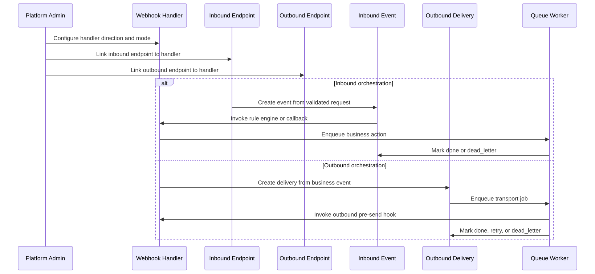

Build dependable webhook operations in Odoo before you scale into broader integration flows.
Shared webhook infrastructure for Odoo teams that need dependable operations, clear control, and a faster path from first webhook to a repeatable integration layer.
Outcomes
Audience
Capabilities
How it works
Core sits between webhook setup and webhook execution so teams can standardize the way work is routed, governed, and extended before they add direction-specific gateway logic.

Core orchestration sequence
Technical proof
The technical section below surfaces the orchestration sequence and core data model so evaluators can inspect how handlers, jobs, and downstream gateway addons fit together.

Core data model
Rollout
Start with Core when you want one shared operating layer before you open inbound endpoints or begin outbound delivery.
bwt_webhooks_inbound and/or bwt_webhooks_outbound.
Looking for a faster path to production? Start with the framework, then add premium connector modules such as Stripe when you want a more turnkey rollout.
This guide covers the shared foundation of the webhook framework: installing the addon stack, assigning access roles, and creating handler records that both the inbound and outbound gateway addons depend on.
Install the following addons in order:
queue_job - background job execution engine (OCA connector queue).bwt_webhooks_core - shared handler registry and services.bwt_webhooks_inbound (optional) - inbound endpoint gateway.bwt_webhooks_outbound (optional) - outbound delivery engine.Confirm the queue_job worker process is active on the server before routing live traffic through any endpoint.
Navigate to Settings -> Users & Companies -> Users, open a user record, and locate the Webhooks privilege under the access rights tab.
Odoo system administrators receive the Administrator role automatically.
A handler defines how inbound events or outbound deliveries are processed. It is the shared execution definition consumed by both gateway addons.
Go to Webhooks -> Handlers -> New and fill in:
Inbound for events, Outbound for deliveries.Save the handler. It is now available to attach to inbound endpoints or outbound endpoint configurations.
When Python Callback is selected:
sale.order).handle_webhook_event).Both fields are required; the handler form enforces this before saving.
Archived handlers remain visible in historical audit records but are no longer selectable for new work. Use Action -> Archive from the handler list or form.
Inbound.Outbound.queue_job worker is running and that no job channel is paused or at capacity.This guide covers the core data model, handler execution contract, and service layer. It is the foundation for understanding both the inbound and outbound gateway addons.
The core addon defines one primary model:
bwt.webhook.handler - execution definition shared by both gateway addons. Carries direction, execution mode, and optional Python callback pointers.The gateway addons extend the graph with these models:
bwt.webhook.inbound.endpoint - public HTTP receiver (inbound addon).bwt.webhook.inbound.event - audit record for each received request.bwt.webhook.inbound.handler.rule - declarative rule row on a handler.bwt.webhook.outbound.endpoint - target HTTP configuration (outbound addon).bwt.webhook.outbound.delivery - queued outbound request snapshot.bwt.webhook.outbound.delivery.attempt - per-attempt HTTP execution log.Rules on the handler are evaluated in ascending sequence order. Each rule carries:
done, dead_letter, retry, create_record, update_record, upsert_record.update_record and upsert_record.The first matching rule wins. If no rule matches, the event or delivery is marked done by default.
Inbound callback signature
def handle_inbound_event(self, event):
payload = event.get_payload()
# ... your logic ...
return event.webhook_done()
Outbound callback signature
def handle_outbound_delivery(self, delivery):
# ... your logic ...
return delivery._build_outbound_delivery_result(outcome="send")
Returning None from either callback produces a framework-level dead_letter. Use the helper methods on the event or delivery record to return well-formed results: webhook_done(), webhook_dead_letter(), webhook_retry(seconds=N).
bwt_webhooks_core ships pure-Python service modules that the ORM models delegate to. These can be imported and tested without the ORM:
services/signature.py - HMAC computation and constant-time verification. Algorithms: sha1, sha256, sha512. Encodings: hex, base64.services/transport.py - translates OutboundRequest value objects to requests.request kwargs. Handles json, form_urlencoded, and multipart body modes.services/identity.py - delivery identity and replay identity resolution, keyed by a configurable header or payload path.services/conditions.py - condition evaluation engine used by model-driven rule processing.services/value_objects.py - InboundMetadata, OutboundRequest, and HandlerOutcome data classes that keep the processing pipeline explicit.All framework exceptions live in bwt_webhooks_core.exceptions:
WebhookValidationError - base class.WebhookSignatureValidationError - HMAC mismatch.WebhookFreshnessValidationError - timestamp outside the allowed window.WebhookPayloadValidationError - unexpected payload shape.WebhookProcessingConfigurationError - misconfigured handler or endpoint.To add a custom processing step:
bwt.webhook.handler record pointing to that model and method via Webhooks -> Handlers.To expose a new value in model-driven rule assignments, extend bwt.webhook.inbound.event or bwt.webhook.outbound.delivery with a stored field and make it accessible via the value-extraction path used in assignments.
No core file edits are required; the framework is designed to be extended through standard Odoo model inheritance and configuration records.